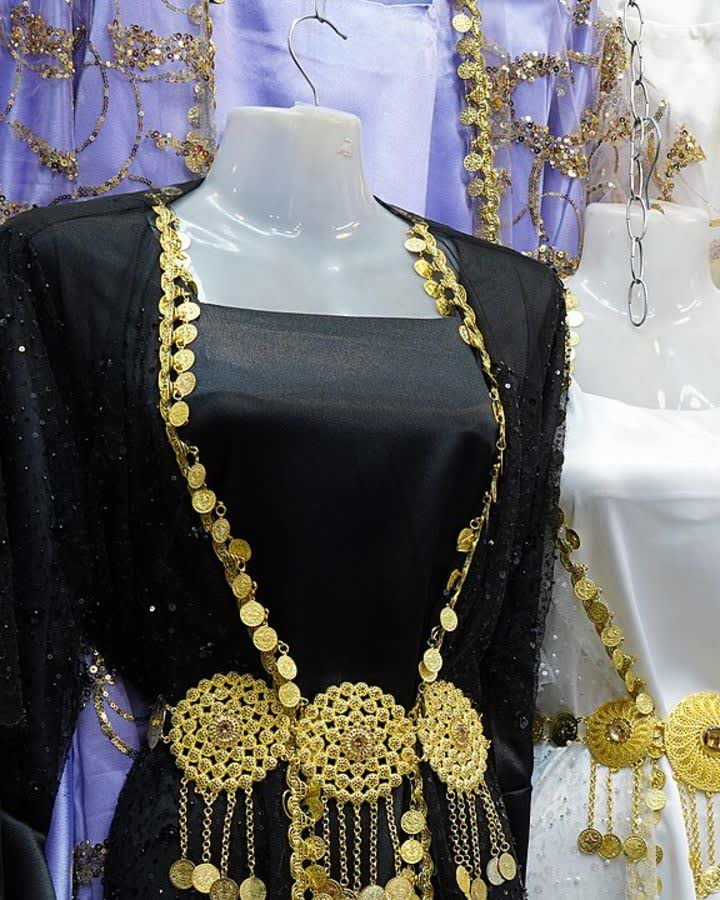

Temsili görsel — Fotoğraf: Enasiqph · CC BY-SA 4.0 · Kaynaklar
Şanlıurfa · Kirasfistan
Şanlıurfa Yöresi Pul Payet Kirasfistan – Gece Siyahı Altın Şûtiklü
4.350 TL
Ön sipariş tahmini fiyatıdır · KDV dahil
Şanlıurfa yöresine özgü gece siyahı pul payet kirasfistan; altın şûtik kuşağı ve dökümlü kollarıyla düğün ve kına gecelerinin gözde tercihi.
💡 Henüz satış yapılmıyor. Talep bıraktığınızda bu model, satış başladığında öncelikli olarak üretilecek ve size özel erken erişim tanınacak.
| Kategori | Kirasfistan |
|---|---|
| Yöre | Şanlıurfa |
| Kumaş | Pul Payet |
| Renk | Gece Siyahı |
| Durum | Ön sipariş (talep toplama aşamasında) |
| Görsel | Temsilidir; satış döneminde gerçek ürün fotoğrafları eklenecek |
| Ürün Kodu | KY-SPPKGS-43 |